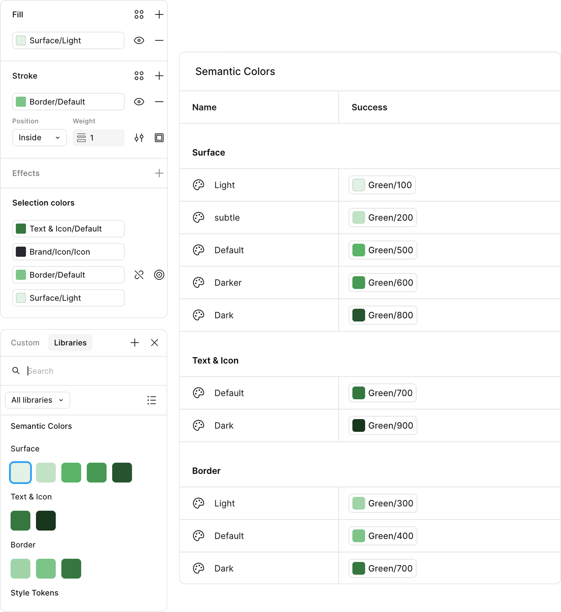
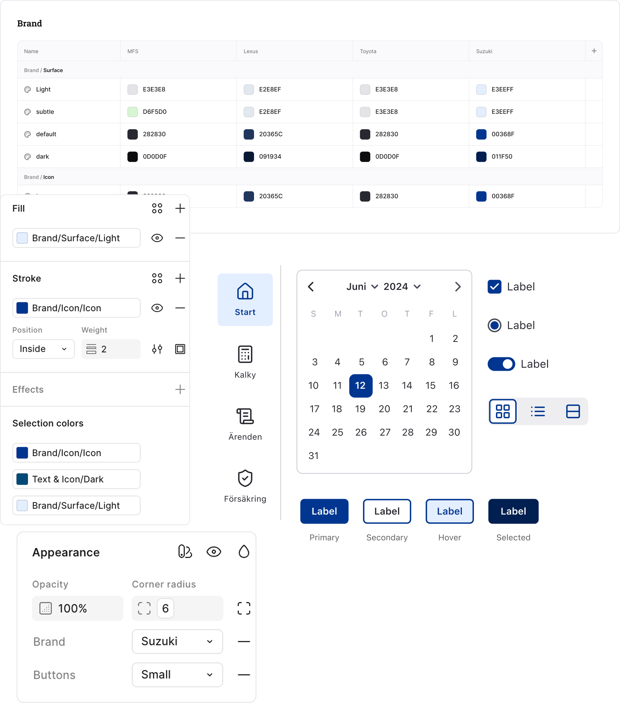

Semantic tokens
Jag skapade semantiska tokens som beskriver färger utifrån deras funktion i gränssnittet, snarare än deras specifika färgvärde. Det gjorde systemet enklare att förstå och gav design och utveckling ett gemensamt språk.
Tokenstrukturen och namngivningen tog jag fram i nära samarbete med utvecklarna, så att färger, typografi och andra värden följde samma logik i design och kod.

Brand tokens
För att samma designsystem skulle fungera för flera varumärken skapade jag brand tokens med separata modes. Dessa kopplades till komponenter som bär varumärkets identitet, exempelvis knappar och navigation.
Genom att byta brand mode uppdateras färgerna automatiskt i alla kopplade komponenter. Samma komponenter och gränssnitt kan därför återanvändas utan att skapa separata versioner för varje varumärke.
